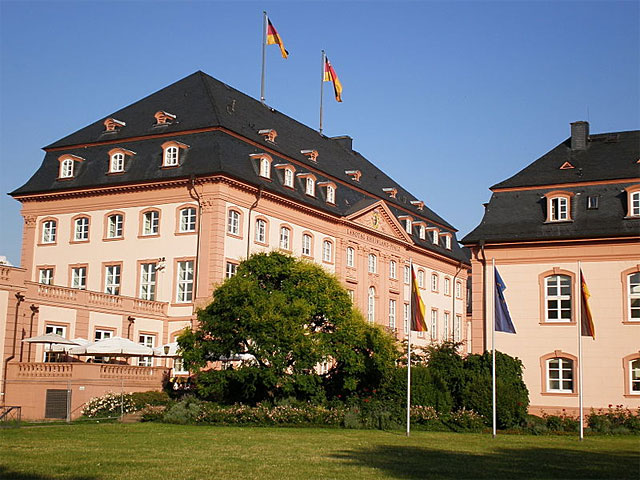
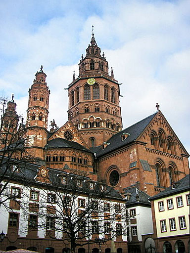
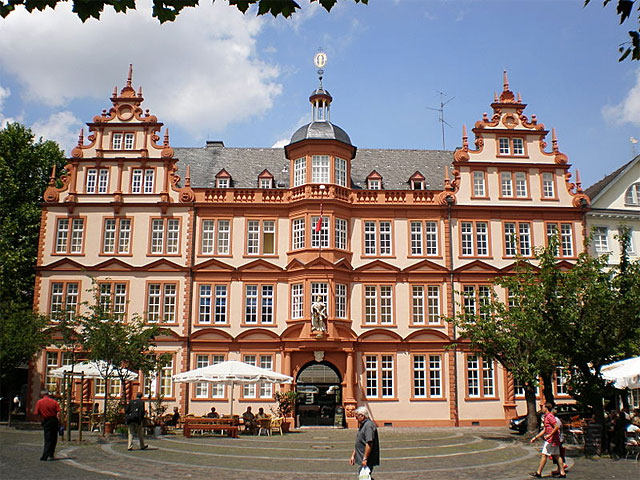
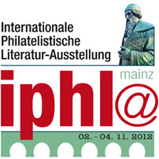

INVITATION A L'EXPOSITION IPHLA 2012
Mise à jour : comme M. Wolfgang Maassen nous a informé le 12 mars, la date limite pour la participation à l'exposition des sites Web IPHLA a été prolongée au 21 mars 2012. Au mois d'avril tous les exposants recevront la notification de l'approbation, la facture et des autres informations.
La dernière compétition de sites Web, organisé par la FIP (Fédération internationale de philatélie), a eu lieu en 2002.
"Ni les règlements n’ont pas étés révisés, ni la FIP accepte dans ses expositions des tells objets. Cela est regrettable parce que la révolution se passe sur l'Internet. Il existe une certaine expérience accumulée, mais est-il apprécié? Il existe un partenaire spécialisé conjointe de AIJP, l'Organisation des Webmasters Philatéliques (PWO) avec son président Victor Manta. Est-ce que jamais quelqu'un l'a contacté et demandé du soutien?". Source: Wolfgang Maassen, Le journaliste philatélique, AIJP, Juin 2011, p. 9.
La réponse à la question ci-dessus est oui, mais ce n'était pas la FIP qui nous a contactés mais M. Maassen, le Président de l’AIJP, qui organise l’IPHLA 2012, une Exposition Philatélique Internationale de Littérature. Par conséquence, après 10 années d'attente, nous avons le plaisir d'annoncer la nouvelle compétition de littérature philatélique, qui accepte aussi comme objets des sites web.
J'ai déjà envoyé ma demande de participation à M. Maassen. Je vais participer avec mon site sur le Communisme sur les timbres postaux, qui a été annoncé en 2003 pour le concours de FIP, mais n’a pas pu participer car cette compétition a été annulée.
Les règlements spéciaux pour le jugement de la littérature philatélique et l’histoire postal peuvent être trouvés ici.
La date limite de participation est fixée au 1er février 2012. Pour participer, s'il vous plaît remplissez le formulaire d'inscription (sites web) et suivez les instructions imprimées sur lui.
Nous invitons nos membres à participer à l'exposition IPHLA 2012.
Victor Manta, Président et Fondateur de la PWO
The BDPh invites authors and journalists to visit IPHLA 2012 in the Gutenberg city of Mainz
By Wolfgang Maassen (AIJP President)
For the BDPh, 2012 will be a very special year. The Federation of German Philatelists (Bund Deutscher Philatelisten) plans another IPHLA, the IPHLA 2012. The acronym ‘IPHLA’ stands for the German ‘Internationale Philatelistische Literatur Ausstellung’, four words that hardly need to be translated. The exhibition will take place on 2nd till 4th of November 2012, and it will be held in Mainz, the city of – as almost every literature lover will know – of the inventor of the movable type printing, Johannes Gutenberg. So, next year the excellent name IPHLA already has – the first edition of the exhibition was held in 1989, in Frankfurt am Main – can be further strengthened.
Like in 1989, the IPHLA 2012 will be a major event and it will be organised purposely as an international exhibition, which is reflected in the fact that the two organisations that have lent their patronage to the event - the FEPA and the AIJP - both are internationally focused. Both organisations will offer their expertise and they will make active use of their networks to promote IPHLA. Besides all european members of the FEPA authors of the following countries are invited: Argentina, Brazil, Chile, South- Africa, New Zealand and Australia, Singapore, USA and Canada als long their entries are written in one of the european languages.

Considering the German regulations the exhibition will be a Rank-1 event. With regard to the judging the new exhibition rules for literature, that have been ratified by the Board of the BDPh, will apply. These rules will be complemented by a number of conditions that specifically apply to IPHLA 2012; these additional rules will be published some time later in an exhibition bulletin. At the moment,interested author can down load all basic information from the official website (www.iphla.de). This website will offer extensive information about the event, also for the convenience of authors and journalists that wish to write about it. Authors and publishers also can download the necessary application forms from the mentioned website.
Anyone who has any questions about the coming event should’nt hesitate to send a request to w.maassen@aijp.org in order to receive the then available information by means of e-mail.

As explained earlier, the organisation legally responsible for the exhibition is the Federation of German Philatelists (BDPh). The formal organiser of the event is the ‘Verein für Briefmarkenkunde’ Mainz (est. 1885), represented by its chairman Lothar Both. The actual organization of all the work concerning the exhibition will be done by a special Organising Committee, which has been installed by the BDPh. The following persons – their names are in alphabetical order - are on the Committee: Dr. Eckart Bergmann, Günther Korn, Franz-Karl Lindner and Wolfgang Maassen. This core team gets support from the team members Lothar Both, Lars Böttger, Herbert Kroog and Rainer von Scharpen. Anyone wishing to make contact with the Committee can use the following address: Wolfgang Maassen – IPHLA 2012, c/o Phil*Creativ GmbH, Vogelsrather Weg 27, 41366 Schwalmtal, Germany.

The IPHLA 2012 will be held in the spacious and attractive premises of the remarkable City Hall of Mainz. The organisers are particularly grateful to the City of Mainz and its culture department who offered the use of the City Hall for IPHLA purposes. If everything goes following plan, the Gutenberg Museum in Mainz will also take part in the event, and also auctions, libraries and study groups who busy themselves with themes like printing, paper, literature and book art will take part. For authors and journalists there will most probably be a special seminar, with an appropriate theme that will be presented by renowned literature experts from around the world. Also planned are special exhibitions within the framework of one or more museums, as well as a comprehensive review of international philatelic literature works.
In the coming months invitations will go out to European philatelic associations and authors. It is also possible to send in innovative “publications”, because for the first time in history the IPHLA event will allow the entrance of ‘digital productions’. The exhibition rules make this possible. So, for instance websites or web pages that are processed and/or maintained by authors could be shown. The AIJP supports these changes, along with the Philatelic Webmasters Organization (PWO).

The BDPh has decided a year ago that it will organise a National Literature Exhibition every four or five years. The BDPh does this especially because it wants to sustain the high standard of output coming from its research communities and study groups. Advantage can be taken from the satisfying experiences of LIPSIA 2007 (Leipzig, Germany), an event that showed the way for IPHLA 2012; hopefully the latter will continue this good tradition.
Especially authors of study groups and research circles, small and larger publishing houses, libraries, literature dealers, sponsors and patrons may profit from the exhibition, an event that will link many interests and many people. Therefore it seems sensible to block out the first week of November 2012 in your agenda. Source.
| Created:
10/15/2011. Revised: 03/12/2012. Copyright © 2011 - 2012 by PWO and by Victor Manta, Switzerland All rights reserved worldwide. |
|